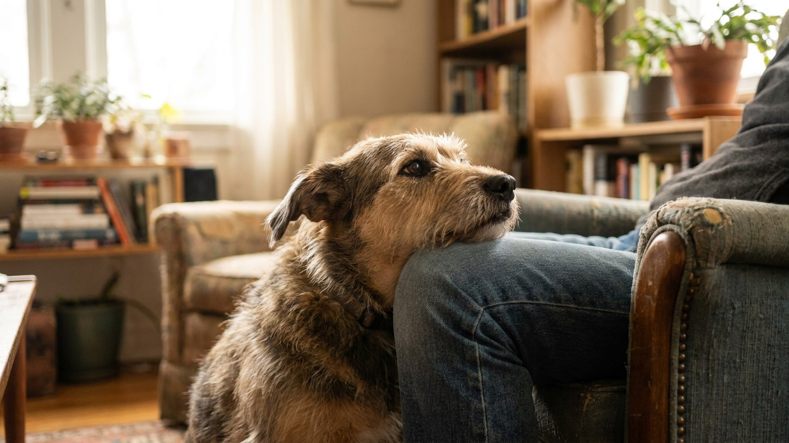

Собака подходит и просто давит боком на вашу ногу. Стоит и давит. Иногда кладёт голову на колено, иногда прижимается всем корпусом, словно хочет слиться с вами в одно целое. Это один из самых тёплых жестов, которые собака умеет делать, — и один из самых информативных. За ним стоят четыре разные причины, и важно уметь их различать.
🐾 Дневник здоровья питомца — в кармане
Вес, прививки, симптомы и напоминания в одном приложении. AnimaLife следит за здоровьем питомца вместо вас.
Самая частая причина — и самая приятная. Физический контакт для собаки — это прямое выражение близости. Волчьи стаи спят в контакте; домашние собаки перенесли эту потребность на своих людей.
Когда собака прислоняется к вам в расслабленном состоянии — хвост мягко виляет или опущен нейтрально, мышцы не напряжены, морда расслаблена — это просто «мне хорошо рядом с тобой». Собака не просит ничего конкретного. Она сообщает о состоянии.
Крупные породы делают это особенно часто: бернские зенненхунды, лабрадоры, мастифы. Физически они достаточно велики, чтобы прислонение было ощутимым, — и они это знают. Это их способ «обнять» без прыжков и лизания.
Собака прислоняется плотнее и с большим усилием в незнакомой обстановке, при громких звуках, в ветеринарной клинике, при стрессе. Это контактная нагрузка — намеренное давление тела на тело снижает тревогу.
Механизм тот же, что в «терапевтических одеялах» для людей с тревожными расстройствами: равномерное давление активирует парасимпатическую нервную систему, снижает частоту сердечных сокращений и уровень кортизола. Собака инстинктивно ищет этого у вас.
Что делать: позвольте собаке прислониться, не отталкивайте. Спокойно стойте или сядьте, говорите ровным голосом или молчите. Если источник стресса устраним — устраните. Если нет (ветклиника, гроза) — ваш спокойный телесный контакт реально помогает.
Для некоторых собак, особенно малоуверенных или с тревожным темпераментом, прислонение — это запрос на то, чтобы хозяин «закрыл» пространство сзади. В дикой природе уязвимое место животного — спина и бока. Собака у вашей ноги закрывает эти направления.
Этот вариант легко отличить: собака прислоняется именно спиной или боком к вашей ноге, голова смотрит от вас — она «держит» пространство, пока вы держите тыл. Часто наблюдается на прогулках в новых местах, при встрече с незнакомыми людьми или собаками.
Что делать: не тяните собаку вперёд принудительно. Дайте ей освоиться в своём темпе. Если это систематическая гиперосторожность — работайте с поведенческим специалистом над уверенностью.
Иногда собака прислоняется после очень активной игры, встречи с гостями или возвращения хозяина домой. Это не расслабленный жест — это попытка «заземлиться». Собака перевозбуждена и ищет что-то стабильное.
В этом случае прислонение может сочетаться с учащённым дыханием, широкими зрачками, подпрыгиванием до или после. Собака словно «приходит в себя» через контакт с вами.
Что делать: не усиливайте возбуждение — не говорите взволнованным голосом, не треплите активно. Просто стойте или сядьте, позвольте собаке прижаться. Через 1–3 минуты большинство собак успокаиваются и отходят сами. Это здоровый механизм саморегуляции.
Некоторые собаки, особенно с тревожной привязанностью, прислоняются постоянно и не дают хозяину шагу ступить. Это уже не жест близости — это тень. Если собака не может оставаться в комнате одна даже на несколько минут, это повод обсудить поведенческую работу с тренером.
🐾 Не уверены, что это опасно?
Опишите симптом в AnimaLife — AI-ветеринар за минуту подскажет, что в пределах нормы, а когда пора к врачу.
🐾 Понравился разбор?
Подпишитесь на канал — каждый день разбираем по одному тревожному симптому у кошек и собак: что в пределах нормы, а когда пора к врачу. Подпишитесь, чтобы не пропустить разбор, который может спасти здоровье вашего питомца.
Прислонение — поведение, характерное для пород с высокой потребностью в контакте. Чаще всего это крупные и молоссоидные породы: мастифы, бульдоги, ньюфаундленды, сенбернары, бернские зенненхунды, лабрадоры и голдены. Но и небольшие «контактные» породы — мопсы, французские бульдоги, кавалер-кинг-чарльз — делают это постоянно.
Если ваша собака никогда не прислонялась, а начала — это изменение в поведении. Оно может означать изменение в эмоциональном состоянии или самочувствии. Упомяните это на ближайшем плановом осмотре.
Если прислонение стало заметно более частым, навязчивым или появилось новым поведением у взрослой собаки — расскажите об этом ветеринару. Иногда усиление «прилипчивого» поведения связано с физическим дискомфортом: собаке что-то мешает, и она ищет поддержку. Ветеринар исключит физические причины и при необходимости направит к поведенческому специалисту.
Материал носит информационный характер и не заменяет очную консультацию ветеринара.